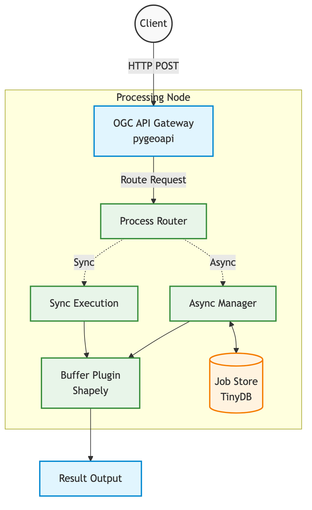
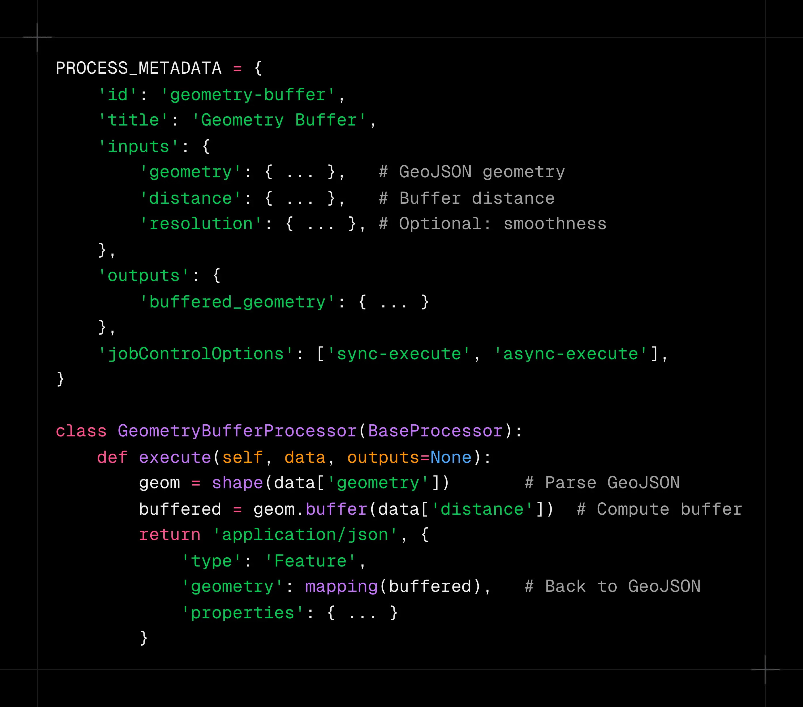
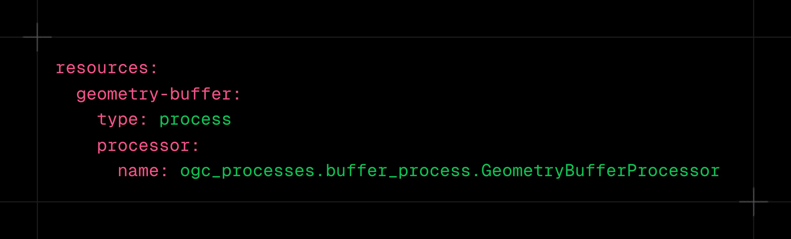
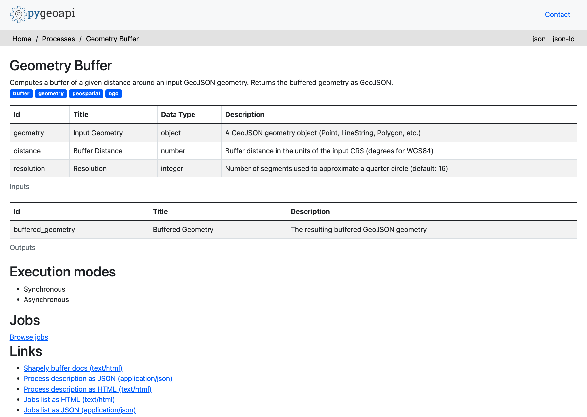
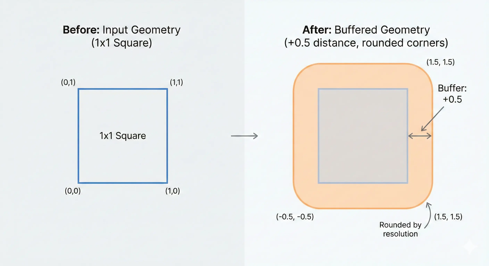

Enabling AI agents to perform complex spatial analysis tasks such as identifying new city parks within a five‑minute walk of a school requires a reliable, standards‑compliant map engine. The OGC API - Processes specification provides exactly that: a well‑defined set of HTTP endpoints that any client, including AI systems, can invoke consistently.
This post documents the backend I built for my Google Summer of Code (GSoC) 2026 application with 52°North. I focus on the technical decisions, the trade‑offs I evaluated, and how you can reproduce a production‑grade, OGC‑compliant spatial service.
Task 1: Deploy and rigorously configure a backend that fully implements the OGC API – Processes standard, including containerization and production considerations.
Task 2: Validate the setup by implementing a meaningful geospatial process, registering it, and exercising the complete execution lifecycle (submission, asynchronous monitoring, and result retrieval).
The following sections walk through my approach, the stack I selected, and the architectural reasoning behind each choice.
Before writing any code, it is essential to understand what the OGC API – Processes standard actually defines.
The specification establishes a common contract for exposing geoprocessing capabilities over HTTP. By adhering to it, we avoid the fragmentation that would otherwise force every GIS backend to invent its own API, making it very difficult for AI agents or generic clients to interoperate.
| Endpoint | Description |
|---|---|
GET /processes |
Lists all processes the server can execute. |
GET /processes/{id} |
Returns the definition (inputs/outputs) of a specific process. |
POST /processes/{id}/execution |
Triggers execution of the chosen process with supplied parameters. |
GET /jobs/{jobId} |
Retrieves the current status of an asynchronous job. |
For the implementation I selected pygeoapi. As the reference open‑source implementation of the OGC API standards, it guarantees strict compliance out of the box and provides a minimal, extensible Python framework.
Why pygeoapi over a custom solution? Building a standards‑compliant server from scratch would require re‑implementing request validation, OpenAPI generation, and many edge‑case behaviours that the OGC community has already codified. Leveraging pygeoapi lets me focus on the domain‑specific process logic while trusting the underlying stack to handle protocol details.
To demonstrate the backend, I implemented a classic geometry buffer process.
A buffer expands a geometry outward by a specified distance, producing a new polygon that represents the area of influence.
In pygeoapi, a process is defined by a Python class that declares its inputs (a GeoJSON geometry and a distance) and its output (the buffered geometry).
The processor is registered via pygeoapi's YAML configuration:
This is how my buffer looked like in the end.
The challenge explicitly required exercising the full lifecycle of an asynchronous process execution.
Spatial operations can be computationally intensive; a request that buffers an entire country would exceed typical HTTP timeouts. Therefore, the API must support asynchronous job handling.
My client script follows these steps:

/processes/geometry-buffer/execution.201 Created with a unique jobId.GET /jobs/{jobId} until the status changes to successful.GET /jobs/{jobId}/results returns the buffered GeoJSON.The mathematical result: Our 1x1 square expanded outward represented in GeoJSON geometry.
Here's a visualuzation of our 1x1 square before and after buffering.
Visualizing the Buffer: Note how the original square's sharp corners become perfectly rounded in the expansion.
Containerizing the application initially caused an infinite restart loop. docker ps showed the container in a restart loop
CONTAINER ID IMAGE STATUS
0713fd49497f ogc-mcp-pygeoapi Restarting (255) 4 seconds ago
pygeoapi loads custom processors dynamically, so the container needed to expose the directory containing my code via PYTHONPATH.
ENV PYTHONPATH="/pygeoapi"
Adding this line to the Dockerfile resolved the import error, and all 35 lifecycle tests passed.

After fixing all tests, I ran validate_tests.py against a local Docker container to capture real-world latency for each endpoint. The suite performs 35 assertions and a 5× repeated latency benchmark on the lightweight endpoints.
All measurements are single-node, unwarmed, on localhost (no network hop). They represent the baseline overhead of the full pygeoapi + Gunicorn + Shapely stack.
| Endpoint / Operation | p50 latency | avg latency | Notes |
|---|---|---|---|
GET / |
7 ms | 20 ms | Cold-start variance; warm avg ≈ 7 ms |
GET /conformance |
6 ms | 7 ms | Pure metadata, sub-10 ms consistently |
GET /processes |
9 ms | 10 ms | Process registry scan |
GET /processes/geometry-buffer |
9 ms | 9 ms | Single-process description |
POST /execution — hello-world (sync) |
21 ms | 21 ms | Trivial echo process |
POST /execution — buffer Point (sync) |
37 ms | 37 ms | Shapely buffer call included |
POST /execution — buffer LineString (sync) |
14 ms | 14 ms | Simpler geometry, faster |
POST /execution — async submit |
15 ms | 15 ms | Returns 201 + Location header immediately |
| Async job polling (total wait) | 16 ms | 16 ms | Job finished within the first poll cycle |
GET /jobs/{id}/results |
9 ms | 9 ms | TinyDB read + JSON serialisation |
Important takeaway: even the heaviest synchronous buffer operation completes in under 40 ms on localhost. The async path is even faster to respond (15 ms) because the server returns a job handle immediately and the geometry computation happens in the background.
The longer-term goal is to expose these OGC endpoints as MCP tools, so that LLM agents (Claude, Gemini, etc.) can invoke spatial processes directly via natural language. This means wrapping each OGC endpoint in an MCP tool definition and hosting a compliant MCP server alongside pygeoapi.
TinyDB is a single-file JSON store with no concurrency guarantees. Under load, parallel job submissions will cause write conflicts. The next step is to replace it with a PostgreSQL-backed manager or a dedicated queue like Celery + Redis, which pygeoapi already supports via its manager plugin architecture.
Currently, the "async" mode in pygeoapi runs the process in a thread pool managed by the WSGI server, not a separate worker process. For CPU-intensive tasks (e.g., buffering a country-scale geometry with millions of vertices), the computation should be offloaded to a dedicated Celery worker so the HTTP server remains non-blocking.
The buffer process demonstrates the pattern, but a useful MCP-connected backend would expose a richer library: intersection, union, simplification, area/perimeter calculation, and coordinate reprojection. Each can be implemented as a new BaseProcessor subclass with minimal boilerplate.
A public OGC API endpoint needs OAuth 2.0 / API-key authentication and per-client rate limiting to prevent abuse. pygeoapi supports security plugins, and a reverse proxy layer (NGINX or AWS API Gateway) can enforce per-IP limits at the edge.
The natural next step is to run tests on every pull request via GitHub Actions, building the Docker image, spinning up the container, running the test suite, and failing the build if any check regresses.
Thanks for reading
You can check out my full open-source codebase, including the Docker setup and validation scripts, right here on GitHub.